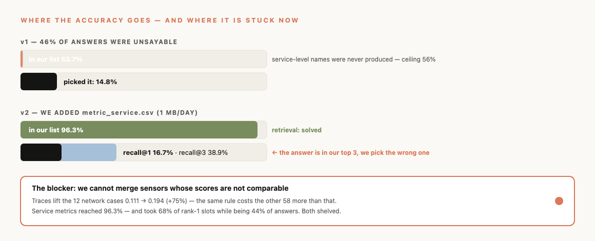

Somebody hands you a box. Inside is everything that happened that night — every temperature reading from every stove, every cook's notes, every order slip.
Enough paper to fill a room. For half an hour of one bad evening.
And here is the trap. When one station jams, every station after it jams too. The ones closest to the customer complain the loudest.
The loudest complaint is almost never the one that started it.
For every stove, it asks one question: "Did this run hotter tonight than it normally does?" Then it ranks them.
It writes its answer down like a report — with the actual numbers it saw, and the other stoves it considered and dropped.
Every timestamp in the box was written in Beijing time. We were reading them as London time.
Eight hours off. So for anything that happened after 4pm, we were looking past the end of the night — at nothing at all.
On 24 cases out of 70, we handed in a blank answer and didn't know it.
One line of code fixed it. It was worth more than every clever idea we had.
Three seconds. Then open what it wrote and look at two things:
① Every number is one it actually measured. Nothing is made up.
② It argues against itself. It says: "this other station started moving
nine minutes earlier than my answer — so I might be wrong."
A second machine reads our report and marks it. It gave us 3 out of 5 on "would this actually help someone at 3am." It marked us down. We left that in.
| it told us | how often it was right |
|---|---|
| "I'm confident" | 1 time in 10 |
| "I'm not sure" | 1 time in 3 |
Three times better when it doubts itself. We checked — this isn't luck.
Normally you'd say: "when the machine isn't sure, ask a human." That would have been exactly backwards. Humans would get the easy ones, and the mistakes would sail through.
Our machine says "I'm confident" when the picture is clean — one stove clearly hottest, nothing else moving.
But a clean picture also happens when the fire is somewhere a thermometer can't reach.
From inside the thermometer, those two look identical.
A quarter of the real problems here were never going to show up on a thermometer at all. They were on the order slips, and we were reading thermometers.
| we gave the AI | answers it changed |
|---|---|
| our ranked list of suspects | 0 out of 20 |
| a much better list | 0 out of 20 |
Hand it a list that's already sorted and it takes the top one and explains why. It wasn't thinking — it was agreeing.
So we don't use it to pick. We use it to grade our homework — the one job where no simple rule can do the checking.
We only had 70 cases. With that few, a small improvement and a lucky streak look the same.
So we did the maths properly. Two of our own findings came back as "could easily be chance." We took them back out of the report.
We'll also tell you: a third of our score depends on a list of keywords we wrote by hand. If the next system names things differently, that third gets worse. We're saying it rather than letting you find it.
| in the story | what it really is |
|---|---|
| One stove | a container (one copy of one service) |
| The building's gas main | a node (the machine they share) |
| A whole station | a service |
| Temperature readings | metrics — CPU, memory, disk |
| An order slip, stamped at each station | a trace — spans with timings |
| First wisp of smoke | onset — how we date it |
| The fire alarm | peak — how we pick it |
| "Hotter than it normally runs" | robust z-score vs the rest of that day |
| The written report | the evidence file |
| The second machine that grades it | GLM-5.2, as judge |
One is us taking back our own claim.
On a problem where the best published attempt solves one case in nine, a team that only reports wins is a team that didn't look.
"Why is there no AI in the judged run? This is the AI track."
We hired the chef twice and both times he read our shortlist and said "yes, the first one."
Zero of twenty changed. He wasn't short of information — the second time our shortlist held
the right answer 96% of the time and he still just agreed. He anchors on the order we hand
him. (GLM-5.2, reasoning on, 0/20 twice; harness in the repo,
make compare.)
"So where does the AI earn its place?"
Grading the report. Whether a stove was hot is arithmetic — no opinion needed. Whether a
write-up is any good is judgement, and nothing simple can check that. So that's the
one job it has. (Accuracy has a deterministic scorer;
evidence quality had none.)
"Will it work on a restaurant you've never seen?"
Two thirds of it will — "was this stove hotter than usual tonight" needs no prior
knowledge of that kitchen. One third won't travel as well: the part that turns "hot stove"
into "why" is a keyword list we wrote by hand.
(Component and time come from a per-case statistic;
reason comes from a 19-entry map. Constants were tuned on all 70 — that's leakage, stated.)
"Is one second per case realistic?"
Yes — it reads only the half-hour that
matters, not the whole night. 20 cases finish in 1.2 minutes of a 20-minute budget.
"How do you know the report isn't made up?"
Every number is carried straight from the
measurement that produced it. No model is ever asked to remember a number.
"Why is it right only 1 in 5 times?"
The best published attempt manages 1 in 9.
Nobody has solved this. We're 2.7× better than where we started.
"Where's the AI, in an AI competition?"
We tested it as the decision-maker twice.
It changed 0 of 20 answers both times — it just agreed with our list. So it grades our report
instead, which is the job no simple rule can do.
"Will it work somewhere new?"
Two thirds will — "hotter than usual
tonight" needs no prior knowledge. One third is a hand-written keyword list that may not
travel. We're saying so.
"What's the catch?"
We tuned it while looking at all 70
practice cases. On unseen ones it will score lower. That's stated in the report.

1. Read the order slips.
A quarter of the problems never show on a
thermometer — they're on the slips. We built that reader and it found them
75% better. But it also shouted over the thermometers on every other case,
so we switched it off. We need a referee that decides which one gets to speak.
2. Pick from the shortlist properly.
The right answer is in our top three
39% of the time, and we pick the wrong one of the three. Fixing just that
would more than double this number.
3. Let the AI name the why.
It's a 15-way multiple choice with the
options printed on the page. Unlike our shortlist, there's no order for it to copy — which is
exactly why we think it would help there. Ten lines. Untested.